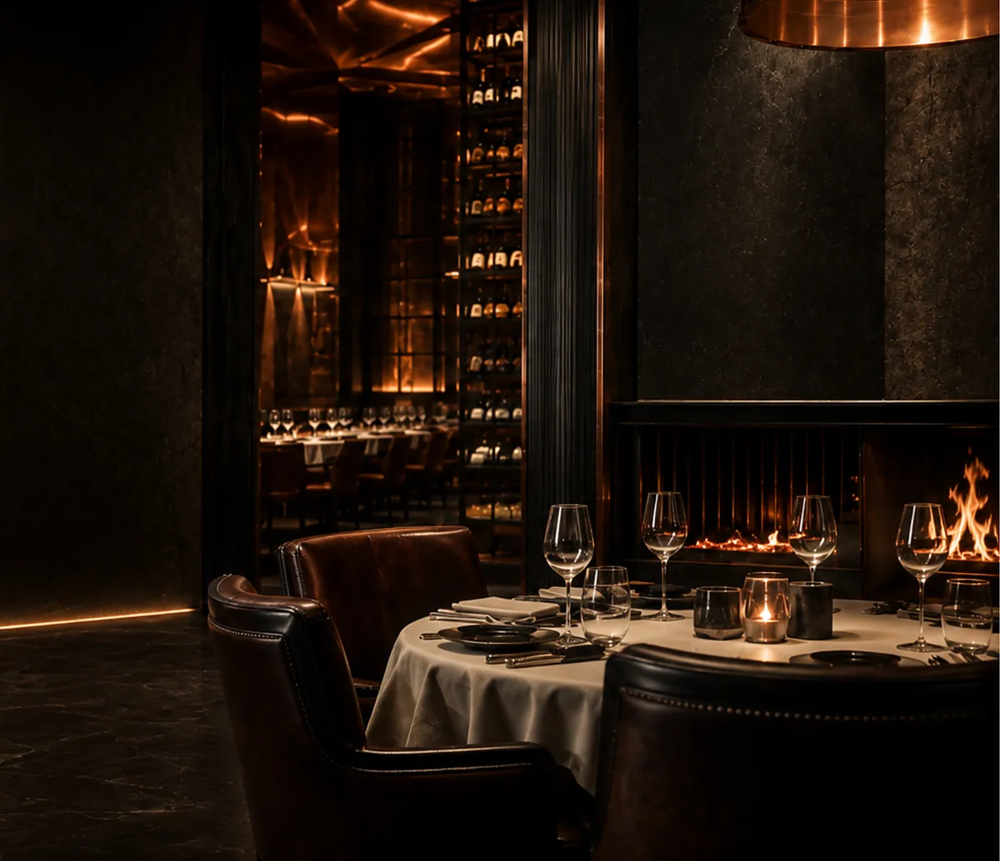

01
La sélection
Wagyu de Kagoshima, Rubia Gallega, Black Angus Prime, Simmental et Charolais d'origine tracée. Chaque pièce est choisie sur carcasse.
Site de démonstration — ce restaurant n'existe pas. Contenus fictifs.
Retour au portfolio
9 rue de la Démonstration · 57000 Metz
+33 (0)3 87 00 00 00

Metz · Ouverture 2026
Des viandes choisies pièce par pièce, maturées avec patience, saisies sur braise vive. Rien de plus. C'est tout ce qu'il faut.
01 — Le Manifeste
BRASA est né d'une conviction simple : une grande viande n'a pas besoin d'être déguisée. Elle demande un éleveur qui prend son temps, une cave de maturation réglée au degré près, et un feu que l'on sait lire.
Notre cuisine ouverte n'a ni gaz ni friteuse. Uniquement des braises de chêne et de hêtre, entretenues du premier au dernier service, et un grill que l'on monte ou descend au centimètre pour trouver la caramélisation juste.
01
Wagyu de Kagoshima, Rubia Gallega, Black Angus Prime, Simmental et Charolais d'origine tracée. Chaque pièce est choisie sur carcasse.
02
De 30 à 60 jours en cave sèche, à 1,5 °C et 82 % d'hygrométrie. Le temps concentre le goût, attendrit la fibre, affine le gras.
03
Un foyer unique, ouvert sur la salle. La flamme sèche saisit, la braise cuit, la cendre repose. Trois gestes, aucun raccourci.
02 — Les Signatures
Le reste de la carte change au fil des arrivages et des maturations en cours. Ces trois-là, elles, ne quittent jamais l'ardoise.

220 g de filet français, saisi vif puis reposé sur cendre chaude. Ail noir confit, jus court à la moelle.

1,2 kg maturés 40 jours, tranchés en salle. La pièce de partage par excellence, servie sur planche brûlante.

Kagoshima, note 11 de persillage. 100 g suffisent : servi en fines tranches, fleur de sel de Guérande, rien d'autre.

03 — L'Expérience
Pierre noire, cuivre patiné, lumière basse et chaude. Vingt-huit couverts seulement, disposés autour du feu : où que vous soyez assis, vous voyez travailler le grill.
En entrant, le bar sert avant et après le repas : douze places au comptoir, cocktails signature, et la cave de maturation visible juste derrière.
Le service se fait à voix basse, sans précipitation. Un repas chez BRASA dure le temps qu'il doit durer — comptez deux heures pour bien faire.

Notre promesse
« Nous ne servons pas une viande que nous
ne serions pas fiers de manger nous-mêmes. »
La maison BRASA
04 — L'Atmosphère


05 — Ils sont venus
★★★★★
La meilleure côte de bœuf que j'aie mangée en Lorraine, sans discussion. Et la salle est magnifique.
★★★★★
On voit le feu depuis sa table. Le wagyu vaut chaque euro. Service impeccable, jamais pesant.
★★★★★
Enfin une table de ce niveau à Metz. J'y ai emmené des clients : ils en parlent encore.
Service du mardi au samedi, midi et soir. Dimanche soir uniquement. Réservation vivement conseillée — la salle est petite.